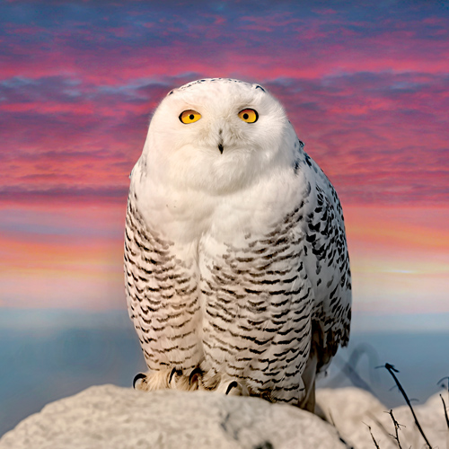

| Songbirds | Parrots | Birds of Prey |
|---|---|---|
 |
 | |
| Songbirds are small to medium-sized birds known for their musical calls and songs, and include species like sparrows, finches, and warblers. | Parrots are known for their colorful feathers, ability to mimic human speechand, and include species such as macaws, parakeets, and cockatoos. | Birds of prey are carnivorous and hunt other animals for food. Examples include eagles, hawks, owls, and falcons. |